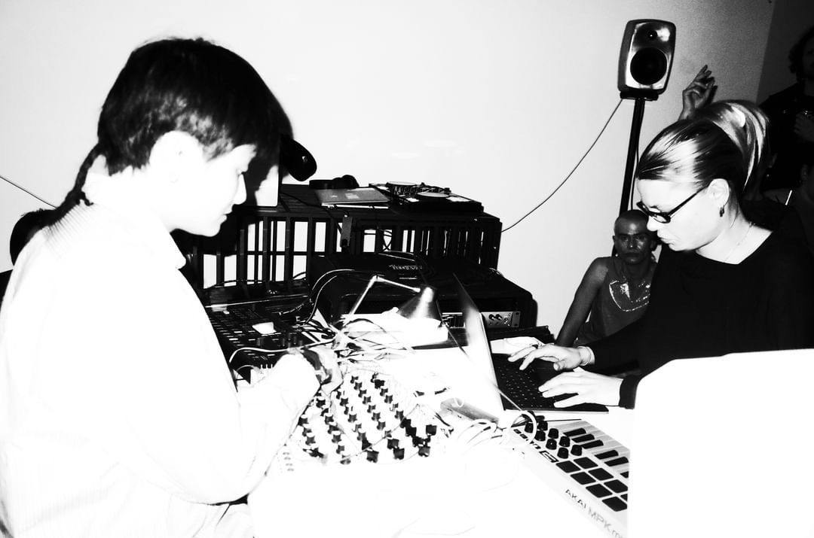

TWEE is a research-based music project exploring digital synthesis (neural networks), analogue devices, and cultural exchange, led by Malou and Xiao-wan started in 2023. It is a fragile exploration of sound, memory, and machine, guided by intuition and the ghosts we choose to listen to.
Research and sound output from TWEE are present through live performances.
<- for bookings and general enquiries, please contact twee2twee2twee@gmail.com ->
A series of TWEE live sets featuring an analog drum machine, a multi-channel speaker system and alternative AI paradigms as instruments, including generative models with latent controllability (as opposed to end-to-end systems) and timbre transfer models trained on archival materials from traditional instruments.